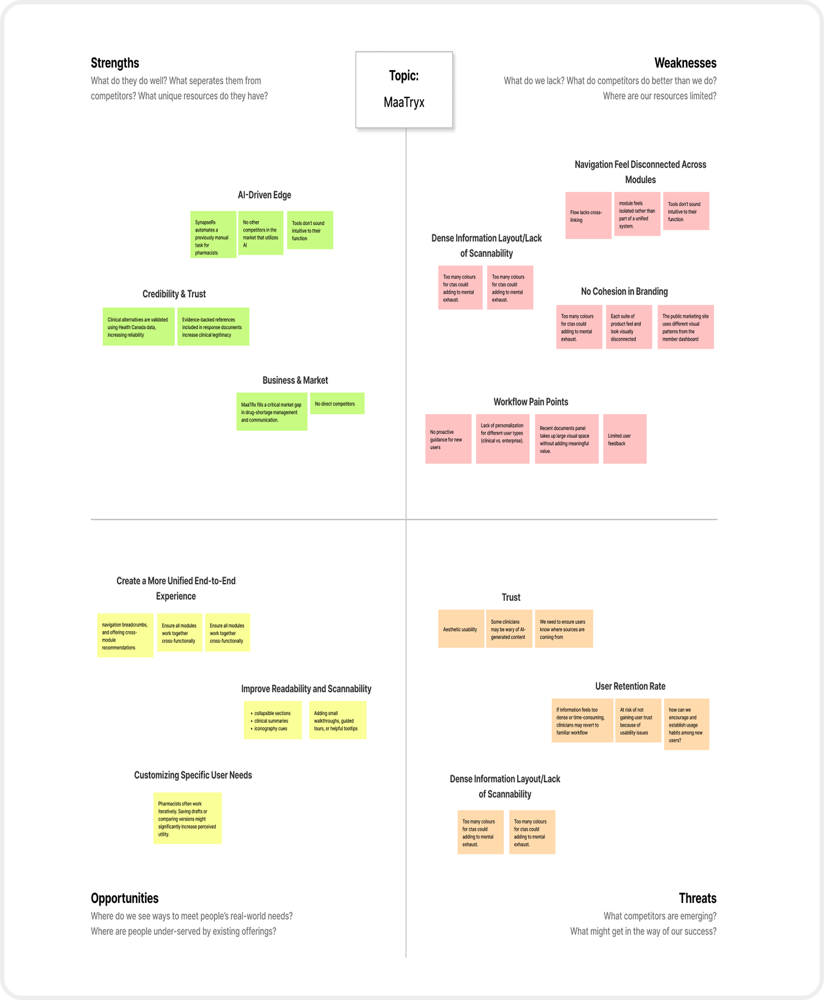
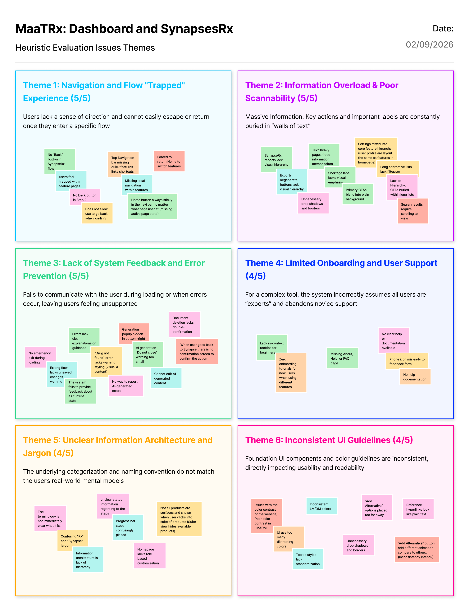
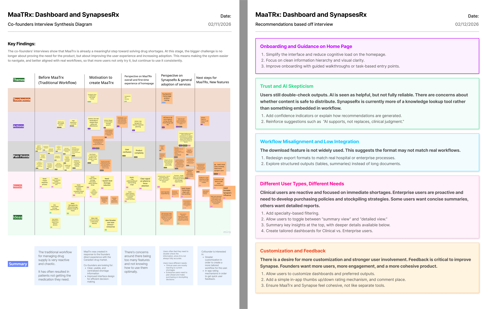
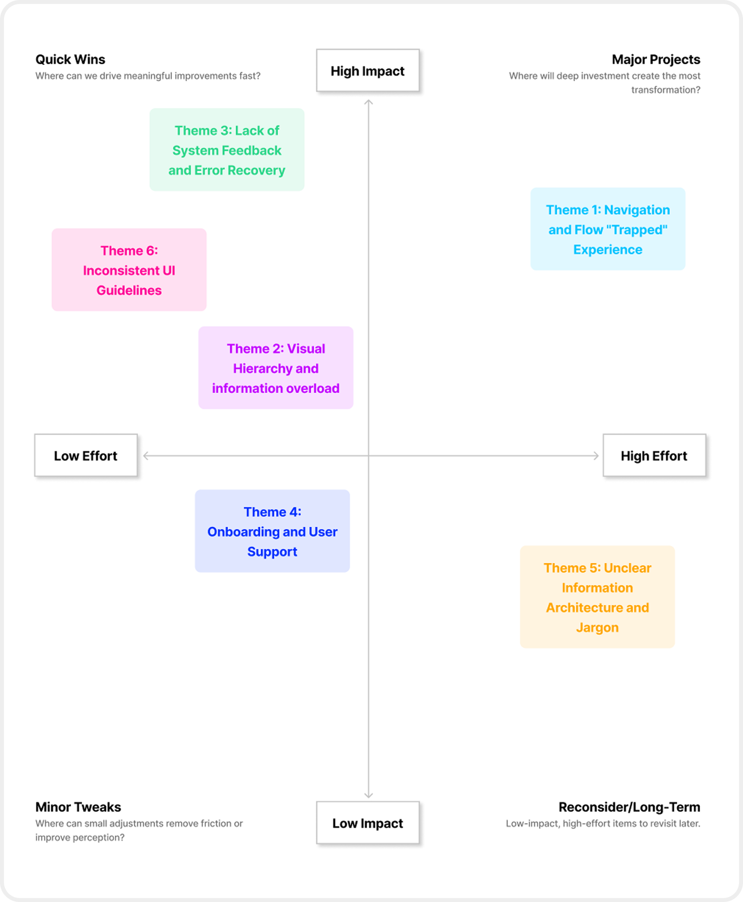
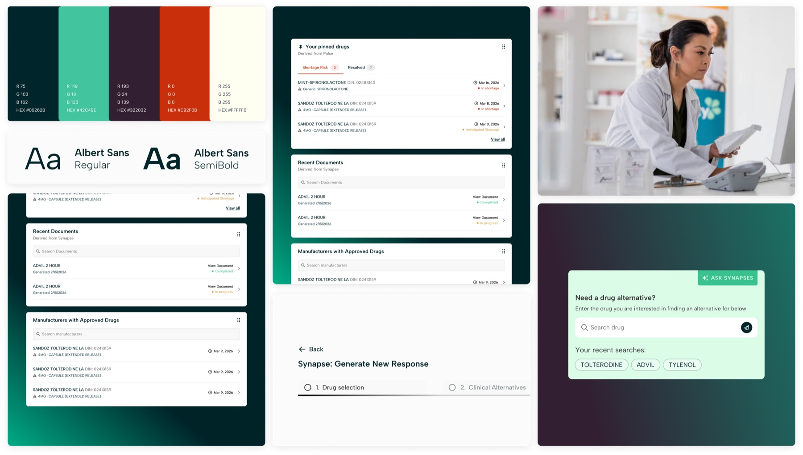
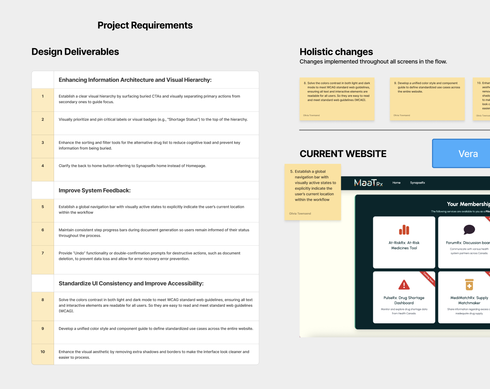
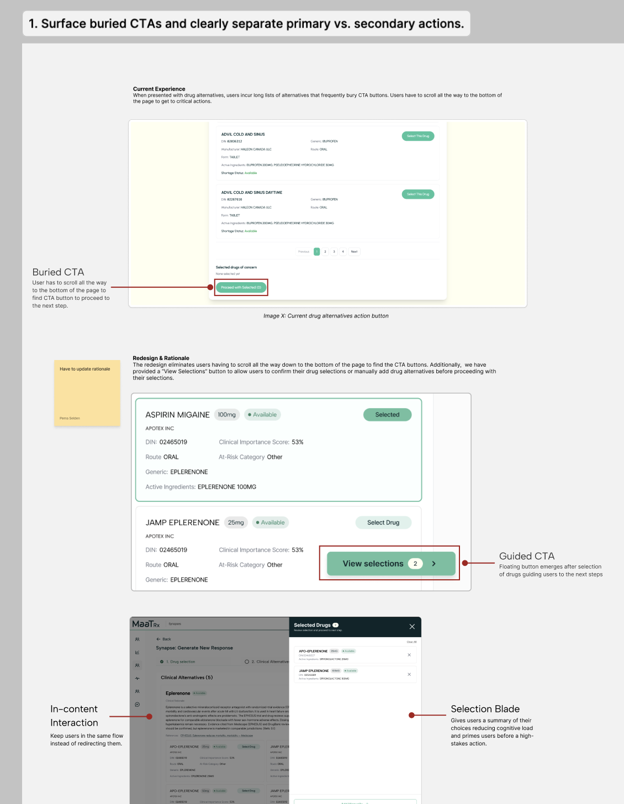
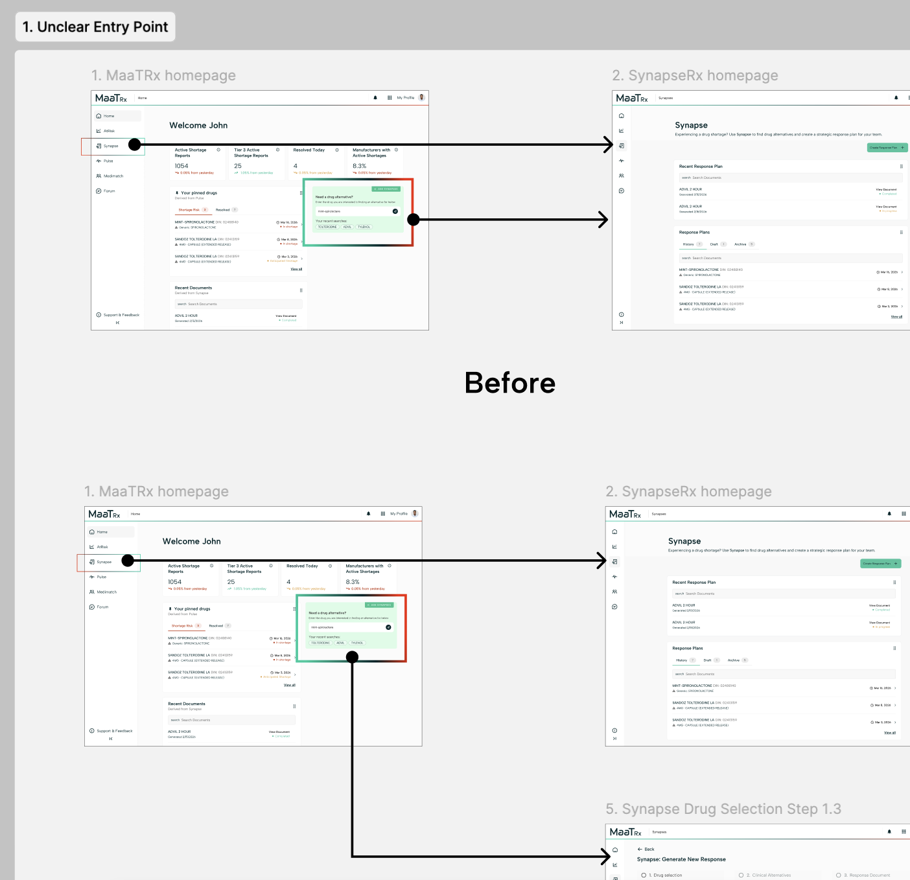

MaaTRx — Drug Shortage Dashboard
Redesigning a dense drug-shortage tool so pharmacy teams can read risk and act at a glance.

Redesigning a dense drug-shortage tool so pharmacy teams can read risk and act at a glance.
This project was a capstone in the University of Toronto’s Master of Information program. I joined as a researcher and designer, contributing to the initial research and usability testing, and 3 pages of design work.
MaaTRx is a Canadian health-technology company founded in 2025. Its web platform helps healthcare practitioners anticipate and manage drug shortages.
This project focused on one tool within MaaTRx that helps users identify alternative drugs and generates guidance on how to implement those alternatives in practice.
Users cannot efficiently navigate MaaTRx’s tool, SynapseRx. This is leading to frustration, errors, and reduced confidence in the tool.
In the discovery phase we used 4 methods to learn more about the SynapseRx workflow, identify where users could be facing challenges, and find design improvements.

Conducted a competitive SWOT to identify MaaTRx’s strategic position.

Audited MaaTRx against established usability principles, identifying critical friction points.

Conducted user interviews to understand workflows before and after MaaTRx adoption.

Prioritized findings across all issues to align the team on where to focus first.
The discovery phase surfaced 10 problems across the product. The first three were both highly impactful and easy to implement — our quick wins.
To ensure continuity with the client’s established brand, we retained their core colours while elevating the typography and overall design feel.

Through continuous discussion and iteration as a team, the work moved from our original design deliverables through two rounds of iteration. Guided by our design strategies, we worked through the three quick-win problems and arrived at new pages that feels modern, trustworthy, and more user-friendly.



A look at our design process — from the original deliverables through two rounds of iteration.
For the full process, see the Redesign rationals — Figma Page ↗.
A closer look at some of the redesigned screens.
Across 8 usability sessions, we validated the redesign and closed out the 10 UX problems identified in research. [Add any final results or a quote.]
[Optional] A short quote from a user or stakeholder to make the outcome feel real.
 03
03Turned 10-question primary research into a low-pressure social product concept in 24 hours.
View case study → 02
02A dual student / teacher platform for everyday food choices — 1st place, Seneca Hackathon 2025.
View case study →